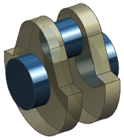
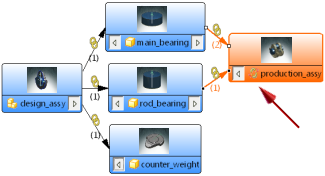
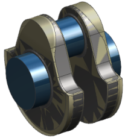

认识断开的 WAVE 链接
-
点击标准工具条上的打开
 。
。 -
在打开对话框中，点击选项。
-
在装配加载选项对话框中，设置如下参数：
部件版本组：
-
加载 = 从文件夹
范围组：
-
加载 = 所有组件
-
使用部分加载 =

-
使用轻量级表示 =
-
加载部件间数据 =

-
加载父项 = 所有级别
-
-
打开 wav3_reparent_production_assembly。
在装配导航器中，注意到所有的组件均处于隐藏状态。
在部件导航器中，注意到有两个链接到体的链接已断开 。
对于这个练习，表示这些断开链接的平衡重实体，被更改为透明显示。

-
在装配工具条上，点击关系浏览器
 。
。在 NX 关系浏览器中，注意到断开的链接 位于产品装配节点上。

-
在关系选项卡中，展开父级部件列。
注意到链接体 (3)和(4)的父级部件尚未被加载，父级部件的名称显示为 counter_wt，这个父级部件的名称已被更改，该链接已过时。
-
展开状态列。
注意到链接体 (3)和(4)的状态为断开的。
如果您想让 NX 在您重命名父级部件文件时维持部件间链接，必须打开子部件文件。
-
关闭 NX 关系浏览器。
-
在装配导航器中，显示所有的平衡重实体。
注意到在创建 WAVE 链接之后又对平衡重进行了设计更改。
